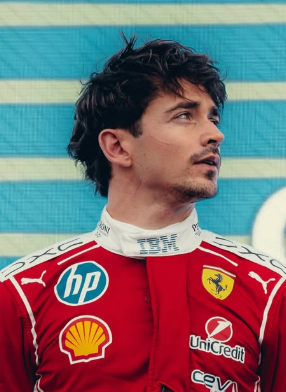

Charles Leclerc
Charles Leclerc
Team: Scuderia Ferrari
Team Principal: Frédéric Vasseur
Number: 16
Nationality: Monaco
Debut: 2018
Born: 16 October 1997
History: Monegasque driver Charles Leclerc has become one of Ferrari’s most important figures of the modern era. Celebrated for his extraordinary qualifying pace and ability to extract maximum performance from the car, Leclerc earned a reputation as one of the fastest drivers over a single lap. Since joining Ferrari, he has carried the expectations of returning the Scuderia to championship glory while consistently delivering standout performances under pressure. Entering 2026, Leclerc remained central to Ferrari’s long-term project and one of the most respected competitors on the grid.
